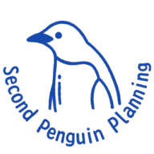

受入企業 A社（外国人社員3名）事例1
外国人社員との連絡板
- 困りごと
- お知らせや雇用書類を紙とLINEで渡していて、誰に何を渡したか分からなくなる。日本語だけでは伝わりにくい。
- 作ったもの
- スマホで見られる日英切替の連絡板。お知らせと共通資料は全員に、雇用契約書類は本人と管理者だけがPINで開ける。
- 変わったこと
- 渡し忘れ・言った言わないがなくなり、書類の最新版が常に1か所にある。
多言語本人だけ見られる書類スマホ

セコンドペンギン企画 ← AI活用セットアップ支援行政書士事務所として受けた仕事の中で、実際に作って毎日使っている仕組みを6つ紹介します。どれも「現場の困りごと1つ」から始めて、数日〜数週間で形にしたものです。お客様の名前は伏せています。
困りごと → 作ったもの → 変わったこと
在留資格・特定技能・登録支援の書類や締め切りを毎日扱っているので、「何を入れれば何が出るべきか」を一から説明していただく必要がありません。
ここにある道具はすべて、まず当事務所の仕事で使って直してきたものです。売るために作った見本ではありません。
在留カードや雇用契約の情報は、誰が見られるか・どこに保存するかを先に決め、本人だけが開ける形にしています。
まずは1つの作業から。オンラインの無料診断で、何ができるかをお伝えします。全国対応です。
掲載の事例は、お客様が特定されないよう業種・人数などを一部まとめて記載しています。